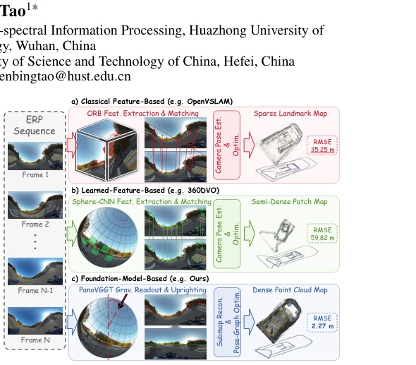
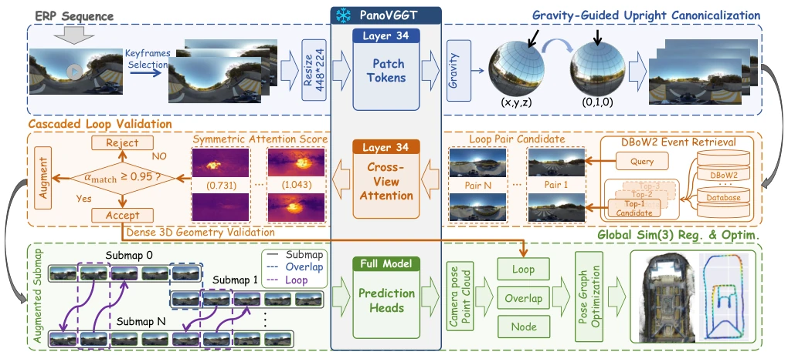
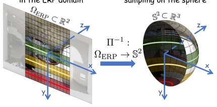
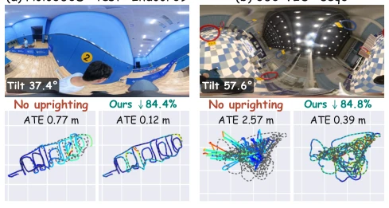

HALO-SLAM 这名字起得挺有诗意，但核心逻辑其实很硬核：它没把 PanoVGGT 这个冻结的“黑盒”当摆设，而是硬是从中间层 tokens 里抠出了重力方向，又利用跨视图注意力机制给回环检测加了道“安检门”。这招“借尸还魂”确实让单目全景 SLAM 在长序列上稳如老狗，125 条序列全过，ATE 还比基线低了快 90%，简直是给全景 SLAM 的“漂移癌”做了个彻底的手术。不过，作者也没避重就轻，老实承认在纹理缺失或动态场景下，这套保守的回环验证可能会漏掉弱回环，导致残留漂移。毕竟冻结模型在极端场景下的泛化能力终究是个玄学，但这波操作确实证明了利用 Foundation Model 的隐式先验比单纯堆砌特征匹配要香得多。
The name HALO-SLAM is quite poetic, but the core logic is actually very robust: it did not treat the frozen "black box" PanoVGGT as a mere decoration, but instead hard extracted the gravity direction from intermediate layer tokens, and utilized the cross-view attention mechanism to add a "security checkpoint" to loop detection. This strategy of "revitalizing the frozen model" indeed made monocular panoramic SLAM highly stable on long sequences, passing all 125 sequences, with ATE nearly 90% lower than the baseline, which was simply a thorough surgery for the "chronic drift issue" of panoramic SLAM. However, the authors did not avoid the heavy issues, honestly admitting that under texture-less or dynamic scenes, this conservative loop verification might miss weak loops, leading to residual drift. After all, the generalization ability of frozen models in extreme scenarios remains an uncertain factor, but this move indeed proved that utilizing the implicit priors of Foundation Models is far more effective than simply piling up feature matching.
研究动机Motivation
全景 SLAM 虽然利用大视场重叠优势解决了大旋转下的定位问题，但 ERP 投影带来的空间畸变和相机倾斜导致的采样不均，使得长序列极易发生姿态与尺度漂移，甚至产生错误的回环闭合。现有方法多依赖手工特征或显式几何预测，如 OpenVSLAM (Sumikura et al. 2019) 和 360DVO (Guo et al. 2026a)，它们在处理长序列时往往难以兼顾鲁棒性与精度。虽然 PanoVGGT (Guo et al. 2026b) 等几何基础模型提供了强大的前馈重建能力，但直接将其用于长序列 SLAM 面临三大挑战：独立子地图的局部坐标系对齐困难、冻结模型对相机 Roll/Pitch 倾斜的敏感性，以及缺乏持久的状态记忆和高效的回环验证机制。此外，现有的全景重力估计方法（如 VectorUp (Bergmann et al. 2021)）往往依赖特定回归器或复杂投影，缺乏利用冻结模型内部表示的通用方案。因此，如何挖掘冻结模型中的隐式重力线索和注意力兼容性，构建低成本且高可靠的全景 SLAM 系统，成为亟待解决的关键问题。
Although panoramic SLAM utilizes the large field-of-view overlap advantage to solve the localization problem under large rotations, the spatial distortion brought by ERP projection and uneven sampling caused by camera tilt make long sequences prone to pose and scale drift, even generating incorrect loop closures. Existing methods mostly rely on handcrafted features or explicit geometric prediction, such as OpenVSLAM (Sumikura et al. 2019) and 360DVO (Guo et al. 2026a), which often struggle to balance robustness and accuracy when processing long sequences. Although geometric foundation models like PanoVGGT (Guo et al. 2026b) provide powerful feedforward reconstruction capabilities, directly applying them to long-sequence SLAM faces three major challenges: difficulty in aligning local coordinate systems of independent submaps, sensitivity of frozen models to camera Roll/Pitch tilts, and lack of persistent state memory and efficient loop verification mechanisms. Furthermore, existing panoramic gravity estimation methods (such as VectorUp (Bergmann et al. 2021)) often rely on specific regressors or complex projections, lacking a general solution utilizing frozen model internal representations. Therefore, how to mine implicit gravity clues and attention compatibility in frozen models, building a low-cost and high-reliability panoramic SLAM system, has become a key problem that needs urgent solving.

Figure 1: Panoramic VO and SLAM paradigms. Unlike pipelines that rely primarily on explicit feature correspon- dences for local reconstruction, our system uses a foundation model as its main local geometry engine, while retaining lightweight feature-based modules for keyframe selection and loop retrieval.
The overall pipeline of HALO-SLAM is based on a frozen PanoVGGT backbone network, achieving global consistency through two core modules: "Gravity-Guided Upright Normalization" and "Cascaded Loop Verification". First, the system decodes the gravity direction in the camera coordinate system from the intermediate patch tokens of the 34th layer of PanoVGGT via a lightweight gravity head, performing spherical upright normalization on ERP images without IMU, eliminating sampling distortion caused by tilt. Second, in the loop detection phase, the system adopts a three-stage cascaded strategy: the first stage uses DBoW2 for event-level retrieval; the second stage innovatively utilizes the Cross-View Attention mechanism to calculate compatibility scores of intermediate tokens, serving as a low-cost filter to eliminate false loops; the third stage uses Symmetric Submap Augmentation, inserting candidate frames into the other submap for full reconstruction, obtaining pixel-level aligned 3D-3D correspondences. Finally, Sim(3) constraints combined with ERP solid angle weights are added to the global pose graph for optimization, recovering globally consistent trajectories and maps.

Figure 2: HALO-SLAM overview. A frozen PanoVGGT supports gravity-guided upright canonicalization and a three-stage loop-validation cascade comprising DBoW2 event-level retrieval, intermediate-token attention filtering, and dense geometry validation via symmetric augmentation. Accepted constraints enter global Sim(3) optimization.

Figure 3: ERP sampling and spherical solid-angle weighting. Uniform sampling in longitude and latitude oversamples po- lar regions, where each ERP pixel subtends a smaller spher- ical area.
The authors evaluated on 125 sequences from five real-world panoramic benchmark datasets (Holo360D, PanoVILD, PAIR360, 360-VIO, 360Loc). Compared to baselines such as OpenVSLAM, 360DVO, and PanoVGGT-SLAM, HALO-SLAM achieved a 100% sequence success rate (125/125), and ATE was the lowest on all benchmarks, reducing by 30%-88% compared to the strongest ERP-native baseline. Gravity estimation experiments show that this method significantly outperforms existing methods like VectorUp under zero-shot settings. Ablation experiments further confirm: gravity normalization contributes significantly to ATE reduction for high-tilt sequences (57.2%); the attention filter eliminated 75.6% of false loops while retaining 99.6% of true loops; symmetric augmentation and solid angle weighted registration also brought significant performance improvements respectively.

Figure 4: Qualitative trajectories on two high-tilt sequences before and after predicted upright canonicalization.